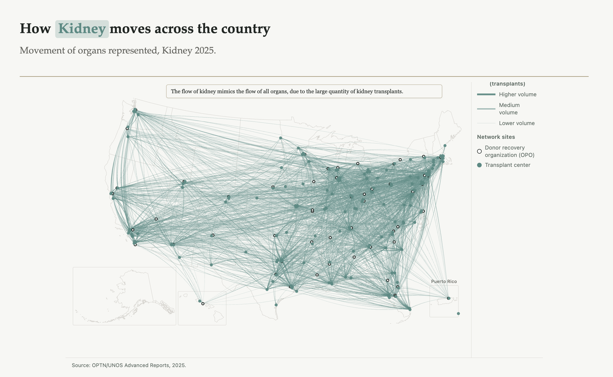
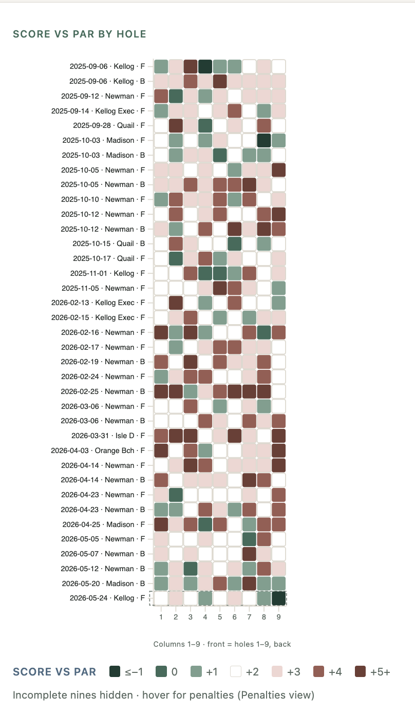
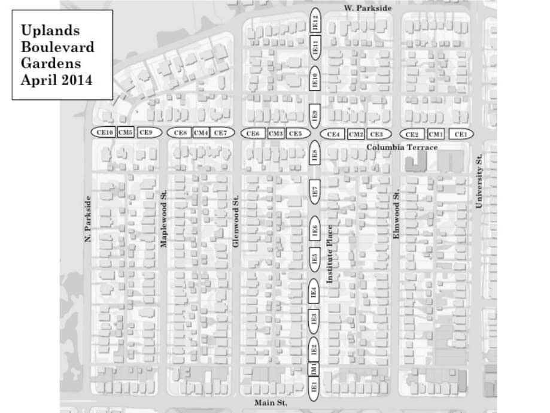
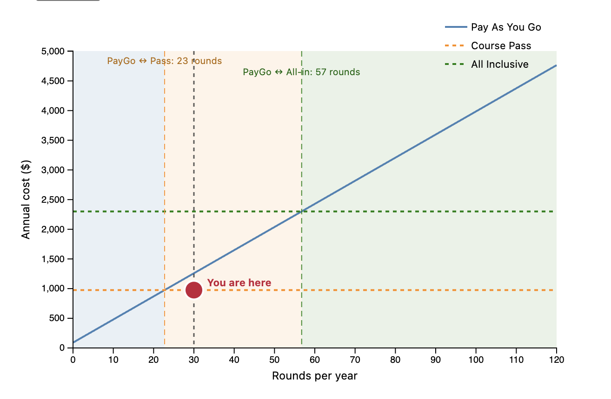

Explorations (7)
Life Flow
Understanding the transplant system through data — time, geography, and the structures that shape who waits and who receives.

Golf Analytics
Making golf performance easier to read — where shots land, how patterns accumulate, and what uncertainty looks like on a course.

Uplands Garden Tracker
Field notes from a community garden — plot responsibility, plant condition, and relocation planning across shared beds.

Venue Viability Lab
What has to be true for a venue to work? Scenario modeling to surface the conditions behind financial sustainability.
Pass Decision
A decision tool for golfers weighing play-as-you-go, course-only, and all-inclusive pass options.

Golf Lab
Experimental charts from range sessions — dispersion, fitting data, and early prototypes for reading motion.
Illinois Education Visualization
Interactive exploration of Illinois education funding and performance through data visualization.